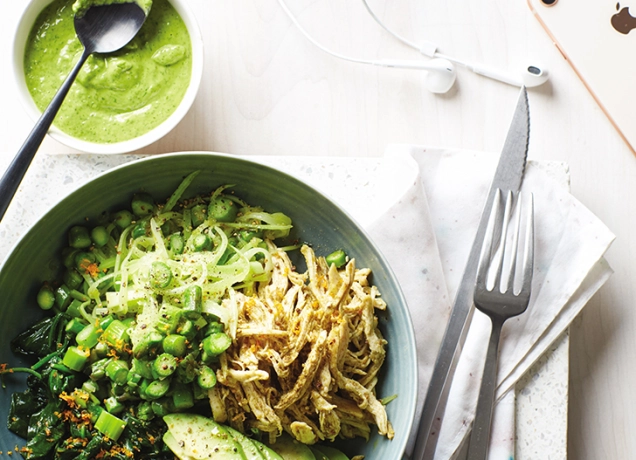

Green Bowl with Chicken, Citrus, and Herbs

Ingredients
- 1 tablespoon extra-virgin olive oil
- 1 small shallot, minced
- 1/2 teaspoon sea salt
- 1 cup broccoli slaw
- 1 cup chopped asparagus
- 2 cups baby spinach
- Finely grated zest of 1 orange
- 1 teaspoon of za'atar
- 3 ounces leftover cooked chicken, shredded
- 1/4 avocado, pitted, peeled, sliced
- 1/4 cup greed godess dressing (any kind)
- Finely grated zest of 1 lemon
- 1/4 cup minced fresh herbs
Steps
- Heat the olive oil in a large sauté pan over medium-high heat.
- Add the shallot and sea salt, and cook, stirring frequently, until the shallot begins to turn translucent.
- Add the broccoli slaw and asparagus and cook, stirring occasionally, until the asparagus is bright green and tender.
- Add the spinach, orange zest and za’atar, and cook until the spinach has wilted. Add the chicken and cook until warmed through.
- Transfer to a bowl and serve topped with the avocado, dressing, lemon zest and fresh herbs.